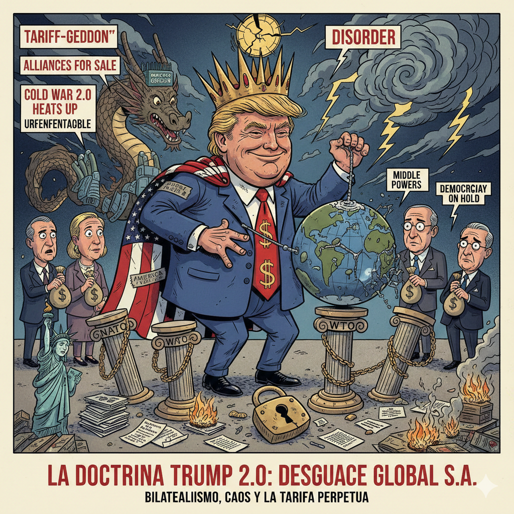
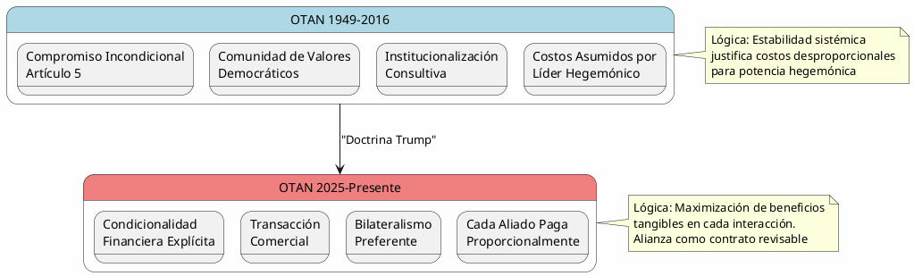
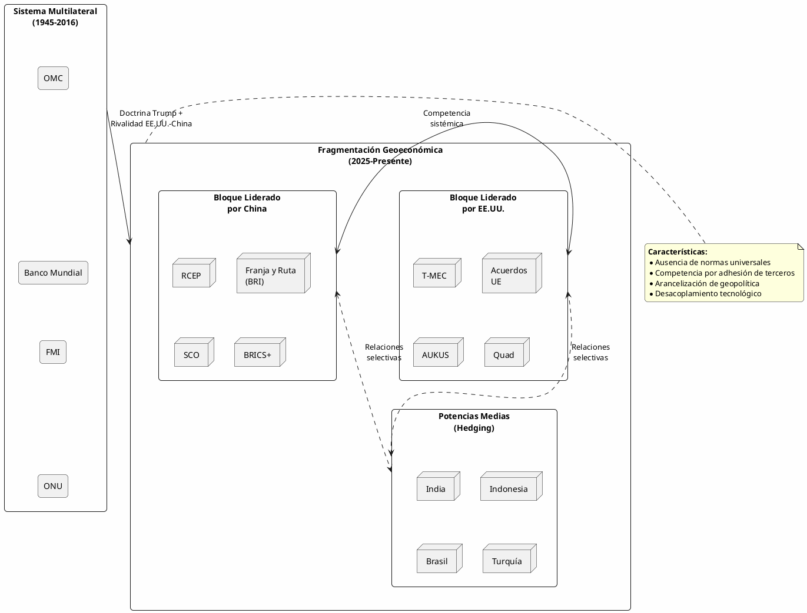
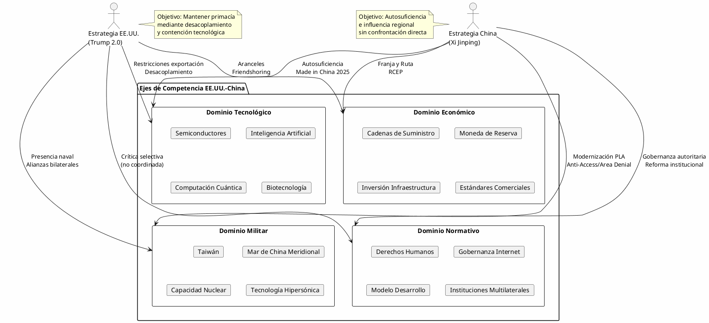
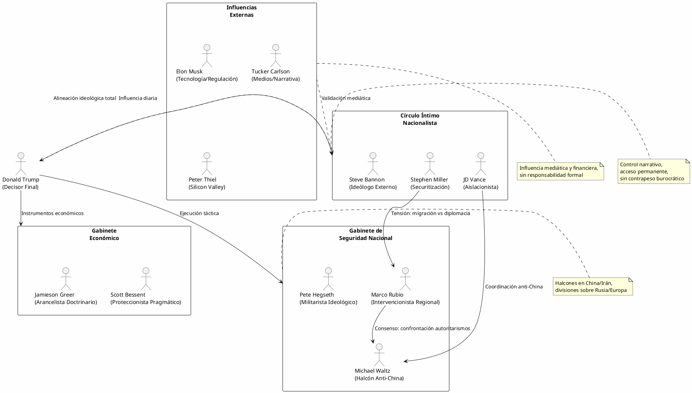
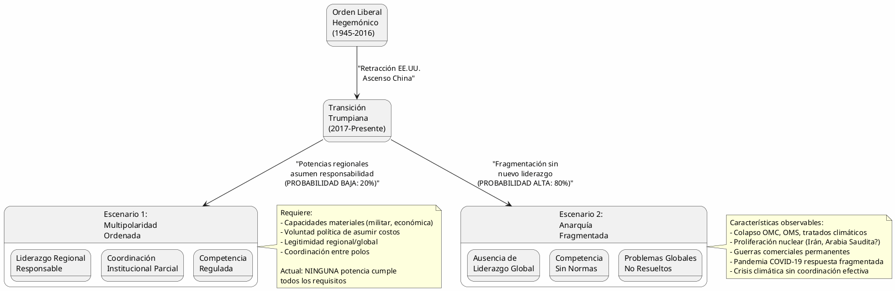
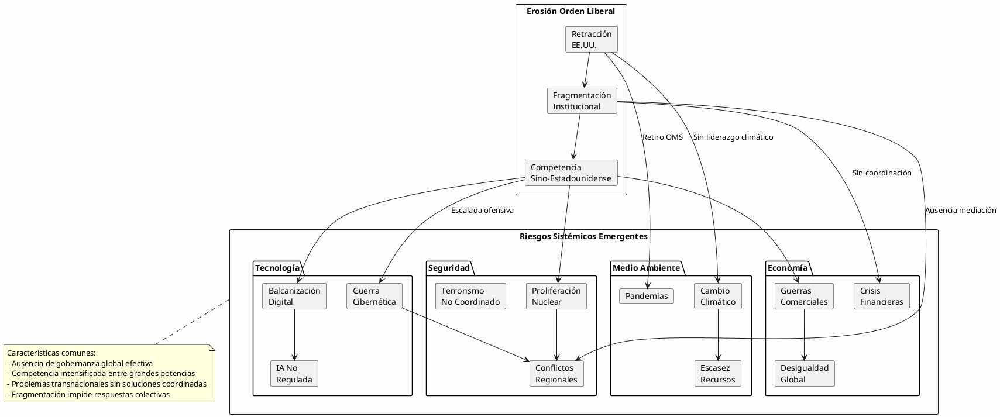

La Doctrina Trump 2.0: Realineamiento Geopolítico y el Fin del Orden Liberal Internacional
La Doctrina Trump 2.0: Realineamiento Geopolítico y el Fin del Orden Liberal Internacional

Resumen Ejecutivo
La segunda presidencia de Donald Trump (2025-2029) representa una ruptura definitiva con el orden internacional liberal que Estados Unidos lideró desde 1945. A diferencia de su primer mandato (2017-2021), caracterizado por la improvisación y la resistencia burocrática, esta administración muestra una planificación estratégica más coherente, aunque igualmente disruptiva. La "Doctrina Trump 2.0" se fundamenta en cinco pilares:
(1) transaccionalismo radical en las alianzas,
(2) bilateralismo preferente sobre instituciones multilaterales,
(3) confrontación económica con China mediante aranceles y desacoplamiento tecnológico,
(4) redefinición unilateral de compromisos de seguridad, y
(5) instrumentalización del poder estadounidense sin consideraciones normativas.
Este análisis examina cómo Trump concibe el poder como recurso finito que debe maximizarse mediante negociaciones de suma cero, rechazando la noción de bienes públicos globales. Su equipo de asesores —particularmente Marco Rubio (Secretario de Estado), JD Vance (Vicepresidente) y Michael Waltz (Asesor de Seguridad Nacional)— combina nacionalismo económico con realismo ofensivo, creando una síntesis ideológica que subordina valores democráticos a intereses materiales. El resultado es un sistema internacional más fragmentado, con alianzas condicionadas a contribuciones financieras directas y una competencia geopolítica intensificada que carece de los mecanismos de cooperación institucional del periodo anterior.
1. Marco Conceptual: Del Liberalismo Institucional al Realismo Transaccional
1.1 La Cosmovisión Trump: Anarquía Hobbesiana y Competencia de Suma Cero
La política exterior de Trump se asienta en una concepción fundamentalmente hobbesiana del sistema internacional. Para esta administración, las relaciones internacionales constituyen un estado de naturaleza donde no existe autoridad superior capaz de garantizar la cooperación. Esta visión contrasta radicalmente con el institucionalismo liberal que caracterizó la política estadounidense desde Truman hasta Obama, donde se asumía que las instituciones multilaterales podían mitigar la anarquía mediante normas, transparencia y expectativas de reciprocidad.
Trump rechaza explícitamente la teoría de la estabilidad hegemónica, según la cual el líder global debe asumir costos desproporcionados para mantener el sistema. En su lugar, adopta una interpretación mercantilista donde cada interacción debe generar beneficios tangibles e inmediatos para Estados Unidos. Esta perspectiva explica su insistencia en que los aliados "paguen su parte justa" en defensa, su desdén por el libre comercio multilateral y su preferencia por acuerdos bilaterales que maximizan el poder de negociación estadounidense.
1.2 Evolución Doctrinal: De la Improvisación (2017-2021) a la Estrategia Coherente (2025-2029)
| Dimensión | Primer Mandato (2017-2021) | Segundo Mandato (2025-2029) |
|---|---|---|
| Planificación Estratégica | Reactiva, errática, influenciada por medios | Proactiva, coordinada, ideológicamente consistente |
| Equipo de Asesores | Dividido (globalistas vs. nacionalistas) | Homogéneo (nacionalistas económicos) |
| Instituciones Multilaterales | Desconfianza, amenazas de salida | Abandono efectivo o rediseño unilateral |
| Alianzas Tradicionales | Cuestionamiento público, mantención práctica | Condicionalidad financiera explícita |
| Uso de Aranceles | Táctico, negociable | Estratégico, instrumento de coerción permanente |
| Relación con China | Guerra comercial fragmentada | Confrontación sistémica (económica-tecnológica) |
| Resistencia Burocrática | Alta (Mueller, destituciones, filtraciones) | Mínima (lealtad como criterio de selección) |
El contraste fundamental radica en la institucionalización de la disrupción. Mientras el primer mandato enfrentó resistencia del aparato de seguridad nacional y del Departamento de Estado, la segunda administración ha reemplazado sistemáticamente a profesionales de carrera con ideólogos alineados. Esto permite ejecutar políticas que anteriormente eran bloqueadas o modificadas por la burocracia.
1.3 Influencia Intelectual: Realismo Ofensivo y Nacionalismo Económico
La doctrina Trump sintetiza dos corrientes teóricas aparentemente incompatibles:
- Realismo Ofensivo (John Mearsheimer): Asume que los Estados buscan maximizar su poder relativo en un sistema anárquico, donde la supervivencia depende de la capacidad de autoayuda. Trump aplica esto mediante la priorización de capacidades militares propias sobre compromisos de defensa colectiva.
- Nacionalismo Económico (Friedrich List, actualizado): Rechaza la ventaja comparativa ricardiana en favor de políticas industriales proteccionistas que preserven sectores estratégicos. Los aranceles no son meros instrumentos negociadores sino pilares de soberanía económica.
Esta fusión genera una paradoja: Estados Unidos actúa como potencia revisionista del orden que construyó, rechazando instituciones multilaterales (ONU, OMC, OMS) mientras mantiene supremacía militar global. Es revisionismo conservador: no busca crear un nuevo orden sino fragmentar el existente para maximizar ventajas bilaterales.
2. Arquitectura de Alianzas: Del Multilateralismo Institucional al Bilateralismo Condicional
2.1 OTAN: De Defensa Colectiva a Arreglo Transaccional
La Organización del Atlántico Norte representa el caso paradigmático de la transformación trumpiana de alianzas. Tradicionalmente concebida como comunidad de seguridad basada en valores compartidos (democracia, rule of law) y compromisos recíprocos, Trump la reduce a un contrato comercial donde la protección estadounidense tiene precio explícito.
Durante su segundo mandato, Trump ha intensificado la presión para que los aliados europeos alcancen el 3% del PIB en gasto militar (superando el objetivo del 2% establecido en 2014). Sin embargo, la innovación doctrinal radica en condicionar la respuesta del Artículo 5 a estos umbrales: países que no cumplan objetivos financieros no pueden asumir automáticamente la protección estadounidense. Esto subvierte la lógica fundacional de la OTAN, transformando una garantía de seguridad en un bien condicionado.
Las implicaciones son profundas:
- Erosión de Credibilidad: Si la defensa colectiva depende de cálculos financieros anuales, los adversarios pueden explotar incertidumbres. Rusia ha intensificado presiones sobre Estados Bálticos, calculando que Trump podría invocar "deudas de defensa" para justificar inacción.
- Fragmentación Europea: Países como Polonia (que supera el 3% del PIB) reciben garantías preferenciales, mientras que España e Italia enfrentan ambigüedad. Esto erosiona la solidaridad intraeuropea.
- Autonomía Estratégica Europea: La incertidumbre estadounidense ha acelerado debates sobre capacidades militares independientes, pero la fragmentación fiscal y política europea impide respuestas coherentes.

2.2 Relaciones Bilaterales Asiáticas: Japón, Corea del Sur y el Dilema de Abandono
En Asia-Pacífico, Trump ha aplicado presiones similares pero con mayor éxito material. Japón accedió a incrementar pagos por presencia militar estadounidense en un 150%, mientras Corea del Sur negocia contribuciones récord. Sin embargo, esta extracción de rentas genera dilemas estratégicos:
- Proliferación Nuclear: Si las garantías extendidas estadounidenses pierden credibilidad, Japón y Corea del Sur podrían reconsiderar programas nucleares propios. Encuestas muestran que el apoyo público a armamento nuclear en Corea del Sur ha alcanzado el 70%, un incremento de 30 puntos desde 2020.
- Apertura a China: La incertidumbre sobre el compromiso estadounidense incentiva hedging strategies. Corea del Sur ha expandido lazos económicos con China pese a tensiones por THAAD, mientras Japón mantiene diálogo diplomático con Beijing en temas regionales.
- Desestabilización Regional: La percepción de retracción estadounidense empodera a China para presionar en disputas territoriales (Mar de China Meridional, Taiwán, Senkaku/Diaoyu).
2.3 América Latina: Indiferencia Benigna y Oportunismo Extractivo
Trump ha demostrado desinterés estratégico en América Latina excepto en dos áreas: migración y recursos naturales. La región ha sido tratada como variable instrumental para objetivos domésticos estadounidenses, sin consideración por dinámicas políticas locales.
México enfrenta amenazas arancelarias recurrentes vinculadas a control migratorio, generando volatilidad económica que socava la integración norteamericana (T-MEC/USMCA). Brasil y Argentina han recibido cortejo diplomático oportunista cuando gobiernos alineados ideológicamente asumen el poder, pero sin compromisos institucionales duraderos.
Esta indiferencia ha permitido expansión de influencia china: infraestructura portuaria en Perú y Brasil, inversiones mineras en Chile y Argentina, y acuerdos tecnológicos (5G) en múltiples países. El vacío estadounidense no es llenado por propuestas de desarrollo sino por presencia comercial china.
3. Multilateralismo vs. Bilateralismo: La Desintegración del Orden Institucional
3.1 Retiro y Sabotaje de Instituciones Multilaterales
Trump ha profundizado su hostilidad hacia instituciones multilaterales, pero la segunda administración ejecuta estrategias de desmantelamiento más sistemáticas:
| Institución | Estrategia Trump 2.0 | Consecuencias |
|---|---|---|
| OMS | Retiro definitivo de financiamiento y membresía | Fragmentación de gobernanza sanitaria global, respuestas no coordinadas a pandemias |
| OMC | Bloqueo permanente de nombramientos al Órgano de Apelación | Colapso del sistema de resolución de disputas comerciales multilaterales |
| Acuerdo de París | Salida inmediata, revocación de NDCs | Retroceso en coordinación climática, empoderamiento de negacionismo global |
| Consejo de Derechos Humanos (ONU) | Salida mantenida desde 2018 | Erosión de presión normativa sobre autoritarismos |
| UNESCO | Retiro de financiamiento | Debilitamiento de cooperación educativa y cultural |
| TPP/CPTPP | Rechazo definitivo a reingreso | Liderazgo comercial asiático pasa a China (RCEP) |
La lógica subyacente es consistente: instituciones multilaterales diluyen el poder de negociación estadounidense al establecer normas que limitan la coerción bilateral. Trump prefiere negociar individualmente donde la asimetría de poder favorece a Estados Unidos.
3.2 Rediseño de Acuerdos Bilaterales: T-MEC/USMCA como Modelo
El T-MEC (USMCA), renegociación del NAFTA, ilustra la preferencia por bilateralismo incluso en contextos regionales. Elementos clave:
- Cláusula Anti-China: Artículo 32.10 requiere que los miembros notifiquen negociaciones comerciales con "economías no de mercado" (código para China), permitiendo a otros miembros abandonar el acuerdo. Esto subordina política comercial de México y Canadá a estrategia estadounidense.
- Reglas de Origen Restrictivas: 75% de contenido norteamericano para automóviles (vs. 62.5% en NAFTA), desincentivando cadenas de suministro globales.
- Revisión Periódica: Sunset clause de 16 años con revisiones cada 6 años, creando incertidumbre estructural que dificulta inversiones de largo plazo.
Este modelo se replica en negociaciones con Unión Europea, Reino Unido y Japón: acuerdos bilaterales con cláusulas que limitan autonomía comercial de los socios y establecen revisiones frecuentes que favorecen renegociaciones estadounidenses.
3.3 Implicaciones Sistémicas: Fragmentación Geoeconómica
La preferencia por bilateralismo genera fragmentación del sistema comercial global:

4. Ejercicio del Poder: Coerción Unilateral y Erosión de Soft Power
4.1 Arancelización de la Política Exterior
Trump ha convertido aranceles en instrumento geopolítico primario, trascendiendo objetivos comerciales tradicionales. Los aranceles funcionan como:
- Herramienta de Coerción Migratoria: Amenazas arancelarias a México condicionadas a cooperación en control fronterizo.
- Instrumento de Presión Geoestratégica: Aranceles a Turquía por compra de sistemas S-400 rusos; a India por políticas de datos localizados.
- Mecanismo de Extracción de Rentas: Aranceles a aluminio/acero europeo justificados por "seguridad nacional" pero negociables por concesiones.
- Arma de Desacoplamiento Tecnológico: Aranceles discriminatorios a sectores tecnológicos chinos (semiconductores, telecomunicaciones, IA).
Esta estrategia subvierte el orden comercial porque divorcia aranceles de justificaciones económicas (protección de industria naciente, corrección de dumping) para convertirlos en política de poder pura. El resultado es impredecibilidad: cualquier país puede enfrentar aranceles unilaterales por razones no comerciales, erosionando la planificación empresarial transnacional.
4.2 Sanciones Secundarias y Extraterritorialidad Jurídica
Estados Unidos ha expandido el uso de sanciones secundarias —penalizaciones a terceros países que comercian con naciones sancionadas. Bajo Trump, esto se intensifica:
- Irán: Restauración de sanciones tras abandono del JCPOA (Plan de Acción Integral Conjunto), penalizando empresas europeas que mantienen comercio petrolero con Teherán. Esto forzó retiro de Total, Siemens y otras corporaciones europeas.
- Venezuela: Sanciones a empresas que transportan petróleo venezolano, afectando a navieras griegas, refinadoras indias y comercializadoras chinas.
- Rusia: Amenazas de sanciones secundarias por Nord Stream 2 (finalmente abandonado tras invasión de Ucrania), afectando empresas alemanas y austriacas.
Esta extraterritorialidad genera resentimiento entre aliados porque subordina su política económica a objetivos estadounidenses. La Unión Europea ha intentado crear vehículos de propósito especial (INSTEX) para evadir sanciones, pero la dominancia del dólar en pagos internacionales y el acceso al sistema financiero estadounidense hacen estas maniobras marginales.
4.3 Erosión del Soft Power: De Arsenal de Democracia a Mercenario Transaccional
Históricamente, el poder estadounidense combinaba capacidades materiales (hard power) con atractivo ideológico y legitimidad institucional (soft power). Trump ha sacrificado sistemáticamente este último:
- Abandono de Democracia como Valor Exportable: Apertura a regímenes autoritarios (Arabia Saudita, Egipto, Hungría) sin condicionamientos democráticos. Esto erosiona diferenciación normativa frente a China o Rusia.
- Retórica Nacionalista: "America First" explícitamente rechaza compromisos altruistas, señalando a aliados que la cooperación estadounidense es transaccional, no basada en valores compartidos.
- Debilitamiento de Diplomacia Pública: Recortes presupuestarios a USAID, Cuerpo de Paz, y programas culturales reducen presencia estadounidense en educación, desarrollo y sociedad civil global.
- Reputación de Impredecibilidad: Retiros abruptos de tratados (JCPOA, Acuerdo de París, Tratado INF) señalan que compromisos estadounidenses son contingentes, reduciendo disposición de terceros a asumir costos de cooperación.
Estudios de opinión pública global muestran caídas dramáticas en percepciones favorables de Estados Unidos: en Europa Occidental cayó del 72% (2016) al 44% (2024); en América Latina del 58% al 31%; en África Subsahariana del 63% al 47%. Este deterioro de legitimidad dificulta coaliciones contra rivales geopolíticos.
5. Confrontación con China: Desacoplamiento Sistémico y Competencia Tecnológica
5.1 De Guerra Comercial a Rivalidad Sistémica
La relación con China ha evolucionado de disputa comercial (primer mandato) a confrontación civilizacional (segundo mandato). Trump y su equipo conciben a China no como competidor comercial desleal sino como rival sistémico que amenaza primacía estadounidense en tecnología, finanzas y gobernanza global.
Elementos de la estrategia de desacoplamiento:
| Dimensión | Instrumentos | Objetivos |
|---|---|---|
| Tecnológica | Restricciones de exportación (semiconductores, IA, computación cuántica) | Ralentizar avance tecnológico chino, mantener ventaja estadounidense |
| Financiera | Amenazas de deslistado de empresas chinas en bolsas estadounidenses | Reducir acceso de China a capital occidental |
| Infraestructura | Presión a aliados para excluir Huawei de redes 5G | Prevenir dependencia tecnológica occidental de China |
| Cadenas de Suministro | Incentivos para relocalización (reshoring/friendshoring) | Reducir vulnerabilidades en sectores estratégicos |
| Académica/Científica | Restricciones a estudiantes chinos en STEM, investigación de doble uso | Limitar transferencia de conocimiento |
| Inversiones | CFIUS (Committee on Foreign Investment) ampliado, screening de inversiones chinas | Prevenir adquisición de tecnologías sensibles |
5.2 Taiwán: De Ambigüedad Estratégica a Transaccionalismo Peligroso
La política hacia Taiwán ejemplifica tensiones entre ideología y pragmatismo. Retóricamente, Trump adopta línea dura contra Beijing, vendiendo armamento avanzado a Taipéi. Sin embargo, su transaccionalismo genera incertidumbres peligrosas:
En entrevistas, Trump ha sugerido que la defensa de Taiwán debería condicionarse a pagos taiwaneses por protección estadounidense, comparándolo con "póliza de seguro". Esto socava ambigüedad estratégica —la política histórica de no comprometerse explícitamente a defender Taiwán militarmente pero mantener capacidad creíble de hacerlo.
Las implicaciones son severas:
- Incentivos a Aventurerismo Chino: Si Beijing percibe que Estados Unidos no defenderá Taiwán sin compensación financiera explícita, la probabilidad de acción militar aumenta.
- Crisis de Credibilidad Aliada: Si Estados Unidos abandona Taiwán, Japón, Corea del Sur y Filipinas reconsiderarían alianzas de seguridad.
- Escalada Armamentística Regional: La incertidumbre impulsa carreras armamentísticas en Asia-Pacífico, incluyendo posibles programas nucleares en Japón y Corea del Sur.

5.3 Consecuencias Globales del Desacoplamiento
El desacoplamiento sino-estadounidense fragmenta la economía global en bloques tecnológicos incompatibles:
- Duplicación de Estándares: Redes 5G (Huawei vs. Ericsson/Nokia), sistemas operativos (Android vs. HarmonyOS), plataformas de pago (Visa/Mastercard vs. UnionPay/Alipay).
- Fragmentación de Internet: Great Firewall chino vs. internet abierto, con creciente balcanización digital.
- Presión sobre Países Intermedios: Naciones deben elegir ecosistemas tecnológicos, lo que determina alineaciones geopolíticas. Malasia, Tailandia, Indonesia enfrentan presiones bilaterales.
- Costos Económicos: FMI estima que fragmentación geoeconómica podría reducir PIB global en 7% a largo plazo por pérdida de economías de escala y especialización.
6. Consejeros y Círculo de Influencia: Institucionalización del Nacionalismo
6.1 Arquitectura del Poder: Lealtad sobre Experiencia
La segunda administración Trump priorizó lealtad personal sobre experiencia técnica en nombramientos clave. Este contraste con el primer mandato es dramático:
| Posición | Primer Mandato (2017-2021) | Segundo Mandato (2025-2029) | Perfil Ideológico |
|---|---|---|---|
| Secretario de Estado | Rex Tillerson (CEO ExxonMobil) → Mike Pompeo | Marco Rubio | Halcón anti-China, intervencionista en América Latina |
| Vicepresidente | Mike Pence (conservador tradicional) | JD Vance | Nacionalista económico, aislacionista cultural |
| Asesor Seguridad Nacional | Michael Flynn → H.R. McMaster → John Bolton | Michael Waltz | Congresista, veterano, halcón anti-China |
| Secretario de Defensa | James Mattis → Mark Esper | Pete Hegseth | Veterano, comentarista Fox News, ideólogo |
| Secretario del Tesoro | Steven Mnuchin | Scott Bessent | Gestor de fondos, proteccionista pragmático |
| Representante Comercio | Robert Lighthizer | Jamieson Greer | Protegido de Lighthizer, arancelista |
El patrón es claro: eliminación de voces moderadoras (Tillerson, Mattis, McMaster) que en el primer mandato limitaron iniciativas disruptivas. La segunda administración es ideológicamente homogénea: nacionalismo económico, escepticismo hacia alianzas multilaterales, confrontación con China como eje articulador.
6.2 Marco Rubio: Intervencionismo Selectivo en el Sur Global
Como Secretario de Estado, Rubio aporta una visión neoconservadora enfocada en América Latina y anticomunismo ideológico. Su agenda incluye:
- Confrontación con Regímenes de Izquierda: Presión máxima sobre Venezuela, Cuba, Nicaragua mediante sanciones expansivas y apoyo a oposiciones.
- Realineamiento con Derechas Regionales: Estrecha coordinación con Argentina (Milei), El Salvador (Bukele), potencialmente Brasil si Bolsonaro retorna.
- Instrumentalización de Migración: Vincular ayuda al desarrollo con control migratorio, subordinando política exterior regional a objetivos domésticos estadounidenses.
Rubio representa la facción más intervencionista de la administración, pero su influencia se circunscribe regionalmente. En Europa y Asia, prevalece la línea transaccionalista de Trump y Vance.
6.3 JD Vance: Aislacionismo Cultural y Retirada Estratégica
El vicepresidente Vance encarna el "nuevo derecho" estadounidense: nacionalismo económico combinado con escepticismo radical hacia compromisos internacionales. Sus posiciones incluyen:
- Oposición a Apoyo a Ucrania: Vance ha argumentado públicamente que Estados Unidos no tiene interés estratégico en defender fronteras ucranianas, proponiendo aceptar anexiones territoriales rusas a cambio de acuerdo de paz.
- Rechazo a Guerras Infinitas: Crítica a intervencionismos del establishment bipartidista (Irak, Afganistán, Libia), favoreciendo repliegue de Medio Oriente.
- Priorización de China sobre Rusia: Argumenta que recursos estadounidenses deberían concentrarse en contención china, tratando a Rusia como amenaza secundaria.
Esta visión choca con halcones tradicionales del Partido Republicano pero refleja realineamiento ideológico de la base electoral trumpiana: clase trabajadora blanca desencantada con globalización.
6.4 Stephen Miller y la Securitización de Migración
Aunque formalmente asesor doméstico, Miller ejerce influencia desproporcionada en política exterior mediante securitización de migración. Su agenda vincula:
- Acuerdos Regionales Coercitivos: Presión a México, Guatemala, Honduras, El Salvador para implementar "terceros países seguros" que bloqueen tránsito migratorio.
- Uso de Aranceles como Palanca: Amenazas comerciales condicionadas a cooperación migratoria, generando volatilidad económica regional.
- Retórica Civilizacional: Enmarcamiento de migración como amenaza cultural, no solo económica, alineando con narrativas de derecha populista europea.
Miller representa el eje más ideológico y menos pragmático del equipo, pero su influencia sobre Trump es profunda debido a alineación en temas identitarios.
6.5 Dinámica Interna: Ausencia de Contrapesos Burocráticos
A diferencia del primer mandato, donde el "Deep State" (aparato de seguridad nacional permanente) limitó iniciativas disruptivas, la segunda administración ha purgado sistemáticamente disidencia burocrática:
- Departamento de Estado: Retiros anticipados masivos de Foreign Service Officers, reemplazo con appointees políticos.
- Agencias de Inteligencia: Directores leales (sin experiencia previa en inteligencia) en CIA, NSA, DNI.
- Pentágono: Oficiales generales críticos forzados a retiro, promoción de ideólogos en Joint Chiefs of Staff.
Esto permite ejecución rápida de políticas previamente bloqueadas (retiro de OTAN, acuerdos unilaterales con adversarios), pero elimina controles de calidad y evaluación de riesgos que proporcionaba burocracia profesional.

7. Impacto Regional y Efectos Sistémicos
7.1 Europa: Entre Autonomía Estratégica y Fragmentación
La política de Trump hacia Europa ha acelerado debates sobre autonomía estratégica pero sin generar respuestas coherentes debido a divisiones internas:
Europa Oriental (Polonia, Bálticos, Rumanía): Incrementan gasto militar bilateralmente con Estados Unidos, aceptando condicionalidad trumpiana a cambio de garantías preferentes. Esto erosiona solidaridad europea y empodera voces euroescépticas.
Europa Occidental (Alemania, Francia): Retórica de autonomía estratégica (ejército europeo, capacidades nucleares francesas expandidas) pero sin respaldo fiscal. Alemania mantiene dependencia energética problemática y restricciones constitucionales a gasto militar.
Flanco Sur (Italia, España, Grecia): Enfrentan presiones migratorias sin apoyo estadounidense, mientras negocian bilateralmente con Turquía y países norteafricanos. Fragmentación de política migratoria europea.
El resultado es paradójico: retórica de autonomía sin capacidades materiales, perpetuando dependencia de Estados Unidos pero con relación transaccional degradada.
7.2 Medio Oriente: Realineamientos Post-Hegemónicos
Trump ha continuado retiro estadounidense de Medio Oriente iniciado por Obama, pero con mayor caos:
- Abraham Accords 2.0: Expansión de normalización Israel-países árabes (Arabia Saudita potencialmente), pero sin resolver conflicto palestino, generando resentimiento popular en mundo árabe.
- Irán: Máxima presión mediante sanciones pero sin estrategia de cambio de régimen creíble. Irán ha expandido programa nuclear hasta niveles próximos a breakout capacity.
- Abandono de Kurdos: Precedente del primer mandato (retirada de Siria) señala a socios locales la precariedad de alianzas estadounidenses.
- Apertura a Rusia: Indiferencia hacia expansión de influencia rusa en Siria, Libia, sugiere aceptación tácita de esferas de influencia.
El vacío estadounidense permite competencia entre potencias regionales (Turquía, Irán, Arabia Saudita) sin mecanismos de coordinación, incrementando probabilidad de conflictos proxy.
7.3 África: Indiferencia y Pérdida de Influencia
África ha sido la región más ignorada por la administración Trump, permitiendo expansión sin contrapeso de influencia china y rusa:
- China: Infraestructura portuaria (Djibouti, Tanzania, Kenia), inversión minera (RDC, Zambia), telecomunicaciones (Etiopía, Nigeria).
- Rusia: Wagner Group (ahora Africa Corps) en Mali, Burkina Faso, RCA; venta de armamento a Argelia, Egipto.
- Estados Unidos: Retiros de bases (Somalia), reducción de presencia AFRICOM, cero iniciativas de desarrollo significativas.
La ausencia estadounidense no es neutral: empodera regímenes autoritarios (Rwanda, Uganda, Egipto) que reciben apoyo chino sin condicionamientos democráticos, revirtiendo décadas de promoción de gobernanza.
7.4 Consecuencias para Orden Global: ¿Multipolaridad o Anarquía?
La pregunta fundamental es si la retracción estadounidense genera transición ordenada a multipolaridad o colapso anárquico:
Argumento Multipolarista: Potencias regionales (Alemania, Japón, India, Brasil) asumen liderazgo en sus esferas, creando gobernanza policéntrica. China lidera Asia, Alemania Europa, Estados Unidos Américas.
Argumento Anárquico: Ninguna potencia tiene capacidad o voluntad de asumir costos de liderazgo global. Resultado es fragmentación sin autoridad coordinadora: colapso climático, proliferación nuclear, guerras comerciales, pandemias no coordinadas.
La evidencia hasta 2025 favorece el escenario anárquico:
- Alemania carece de capacidad militar y voluntad política para liderazgo europeo.
- China no ofrece bienes públicos globales (ayuda humanitaria limitada, sin apertura de mercados).
- India prioriza desarrollo interno sobre responsabilidades internacionales.
- Brasil sufre inestabilidad política crónica que impide liderazgo regional consistente.

8. Evaluación Crítica: ¿Estrategia Deliberada o Destrucción Reactiva?
8.1 Tesis de la Gran Estrategia Nacionalista
Algunos analistas (Elbridge Colby, Christopher Buskirk) argumentan que Trump ejecuta gran estrategia coherente: retracción de compromisos periféricos para concentrar recursos en competencia con China. Según esta interpretación:
- Priorización Racional: Estados Unidos no puede sostener compromisos globales ilimitados; debe elegir entre Europa, Medio Oriente, Asia. La elección es Asia (China).
- Redistribución de Cargas: Aliados europeos deben asumir su defensa; Medio Oriente debe auto-balancearse entre potencias regionales.
- Eficiencia de Costos: Multilateralismo diluye poder estadounidense mediante concesiones a aliados menores. Bilateralismo maximiza apalancamiento.
Crítica: Esta tesis otorga coherencia post-hoc a políticas erráticas. Trump ha amenazado simultáneamente a aliados europeos (tarifas, retiro de OTAN) mientras demanda cooperación contra China. No hay evidencia de planificación estratégica: decisiones siguen impulsos personales, ciclos mediáticos, relaciones interpersonales con líderes extranjeros.
8.2 Tesis de la Destrucción Creativa
Autores como Anne-Marie Slaughter y Richard Haass argumentan que Trump destruye orden existente sin visión alternativa. La "estrategia" es puramente negativa: desmantelar instituciones multilaterales, erosionar alianzas, pero sin construir arquitectura sustituta.
Evidencia:
- Retiro del TPP: Sin reemplazarlo, permitiendo RCEP liderado por China.
- Abandono del JCPOA: Sin renegociación exitosa, permitiendo aceleración nuclear iraní.
- Sabotaje de OMC: Sin proponer sistema alternativo de resolución de disputas comerciales.
- Presión sobre OTAN: Sin crear arquitectura de seguridad europea alternativa.
El resultado es vacío institucional donde problemas globales (pandemias, clima, proliferación) carecen de mecanismos de coordinación.
8.3 Síntesis: Transaccionalismo Táctico sin Visión Estratégica
La interpretación más parsimoniosa combina elementos de ambas tesis:
Trump posee cosmovisión ideológica consistente (realismo ofensivo, mercantilismo, unilateralismo) pero carece de planificación estratégica para implementarla. Sus acciones son tácticamente racionales dentro de lógica transaccional (cada negociación debe generar beneficios inmediatos) pero estratégicamente incoherentes (socavan objetivos de largo plazo como contención de China mediante alienación de aliados europeos necesarios para coalición tecnológica).
Los consejeros aportan racionalización ideológica (Vance, Miller) e implementación táctica (Rubio, Waltz) pero no coordinación estratégica. El resultado es destrucción del orden existente sin capacidad de construir alternativa funcional.
9. Implicaciones para el Sistema Internacional
9.1 Proliferación Nuclear: El Retorno del Fantasma
La erosión de garantías extendidas estadounidenses incrementa incentivos a proliferación nuclear:
Casos de Alto Riesgo:
- Corea del Sur: Apoyo público a programa nuclear propio supera 70%. Capacidad técnica (industria nuclear civil avanzada) permite breakout rápido.
- Japón: Posee plutonio suficiente para >1000 armas nucleares. Normativa pacifista constitucional erosiona ante percepción de amenaza china.
- Arabia Saudita: Ha advertido que desarrollo nuclear iraní forzaría respuesta simétrica. Cooperación con Pakistán (posible transferencia de tecnología).
- Turquía: Erdoğan ha sugerido públicamente que Turquía debería poseer armas nucleares. Capacidad técnica limitada pero determinación política alta.
La paradoja es que Trump, obsesionado con prevenir proliferación iraní y norcoreana, genera condiciones que incentivan proliferación en aliados. TNP (Tratado de No Proliferación) se sostiene sobre garantías extendidas creíbles; su erosión socava todo el régimen.
9.2 Cambio Climático: Colapso de Coordinación Global
El retiro estadounidense del Acuerdo de París elimina al segundo mayor emisor de carbono del único mecanismo de coordinación climática global. Consecuencias:
- Efecto Domino: Brasil, Rusia, Australia citan retiro estadounidense para justificar incumplimiento de NDCs (Nationally Determined Contributions).
- Desfinanciamiento: Fondos climáticos (Green Climate Fund) pierden contribución estadounidense, limitando adaptación en países vulnerables.
- Fragmentación Regulatoria: Ausencia de estándares globales genera ineficiencias: mercados de carbono incompatibles, regulaciones divergentes que dificultan comercio verde.
El tiempo perdido (2025-2029) es crítico: IPCC advierte que trayectoria actual apunta a +2.7°C para 2100, requiriendo recortes de emisiones inmediatos que el retiro estadounidense imposibilita.
9.3 Pandemias y Salud Global: Lecciones Ignoradas de COVID-19
La respuesta a COVID-19 demostró fragilidad de cooperación sanitaria global. El retiro de la OMS por Trump elimina mecanismos de:
- Alerta Temprana: Sistema de vigilancia epidemiológica global depende de financiamiento estadounidense.
- Coordinación de Vacunas: COVAX y futuros mecanismos de distribución equitativa carecen de liderazgo estadounidense.
- Investigación Conjunta: Redes de investigación de patógenos emergentes pierden nodo crucial.
La probabilidad de pandemias aumenta con urbanización, deforestación, comercio de vida silvestre. Sin coordinación global, respuestas serán tardías y nacionalistas, maximizando mortalidad.
9.4 Tecnología y Regulación: Balcanización Digital
La competencia tecnológica sino-estadounidense genera ecosistemas incompatibles:
Capa de Infraestructura: Redes 5G (Huawei vs. Occidente), cables submarinos, centros de datos.
Capa de Plataformas: WeChat/Alipay vs. Facebook/Google, TikTok vs. Instagram, Baidu vs. Google.
Capa de Regulación: Privacidad de datos (GDPR europeo vs. modelo chino vs. ausencia estadounidense), inteligencia artificial (regulación europea vs. laissez-faire estadounidense vs. control estatal chino).
Países intermedios enfrentan presión para elegir ecosistemas, lo que determina alineaciones geopolíticas. Indonesia, Tailandia, Malasia negocian bilateralmente con ambos bloques, intentando hedging que se vuelve insostenible a medida que sistemas divergen.

10. Escenarios Futuros y Conclusiones
10.1 Escenario Optimista: Corrección Post-Trump (Probabilidad: 25%)
En este escenario, la presidencia Trump es aberración temporal. Una administración post-Trump (2029+) restaura compromisos multilaterales, reconstruye alianzas, reingresa a instituciones internacionales.
Condiciones Necesarias:
- Victoria demócrata o republicana tradicional en 2028
- Ausencia de crisis mayores (guerra, pandemia) que consolide nacionalismo
- Resiliencia institucional europea y asiática durante interregno trumpiano
- China no capitaliza retracción estadounidense irreversiblemente
Limitaciones: Incluso con restauración nominal, el daño es duradero. Aliados aprendieron que compromisos estadounidenses son contingentes a ciclos electorales domésticos. Inversiones en autonomía estratégica (militar europea, diversificación asiática) no se revierten. Confianza, una vez erosionada, requiere décadas para reconstruirse.
10.2 Escenario Central: Fragmentación Gestionada (Probabilidad: 50%)
El sistema internacional se fragmenta en bloques geoeconómicos (estadounidense, chino, potencias medias) pero mantiene coordinación mínima en amenazas existenciales (proliferación nuclear, pandemias).
Características:
- Comercio organizado en bloques preferenciales (T-MEC, RCEP, UE) con aranceles inter-bloques
- Alianzas de seguridad bilaterales flexibles (Quad, AUKUS) sin instituciones permanentes
- Coordinación ad-hoc en crisis (G20 para finanzas, coaliciones temáticas para clima)
- Competencia tecnológica con estándares divergentes pero interoperabilidad limitada
Este escenario es el más probable porque refleja equilibrio entre fuerzas centrífugas (nacionalismo, competencia) y centrípetas (interdependencia económica, amenazas compartidas).
10.3 Escenario Pesimista: Colapso Anárquico (Probabilidad: 25%)
Fragmentación acelera hasta colapso de coordinación en problemas existenciales. Características:
- Proliferación nuclear en Medio Oriente y Asia-Pacífico
- Guerra comercial permanente genera recesión global
- Cambio climático supera +3°C por ausencia de mitigación coordinada
- Pandemias recurrentes con respuestas nacionalistas tardías
- Conflicto militar sino-estadounidense sobre Taiwán
Mecanismo de Escalada: Crisis en una dimensión (ej. conflicto Taiwan) contamina otras (guerra comercial intensifica, aliados europeos divididos, crisis financiera global), generando espiral descendente sin mecanismos institucionales de estabilización.
10.4 Conclusiones: El Legado Trump en Perspectiva Histórica
La doctrina Trump representa ruptura histórica comparable a aislacionismo de 1920s-1930s que precedió la Segunda Guerra Mundial. Sin embargo, el contexto es fundamentalmente diferente:
Entonces: Estados Unidos era potencia ascendente que rechazaba responsabilidades internacionales. Orden existente (Liga de Naciones) colapsó sin reemplazo.
Ahora: Estados Unidos es potencia declinante en términos relativos que abandona orden que construyó. Ninguna potencia única puede reemplazarlo; China carece de capacidad ideológica/material; Europa carece de voluntad política.
El resultado no es retorno a multipolaridad del siglo XIX (cinco grandes potencias balanceándose) sino fragmentación sin hegemonía: múltiples polos sin normas compartidas, competencia sin reglas, problemas globales sin soluciones coordinadas.
Tres Legados Duraderos:
- Demostración de Reversibilidad: Trump probó que compromisos estadounidenses (tratados, alianzas, instituciones) son reversibles en un ciclo electoral. Esto socava cualquier acuerdo futuro.
- Normalización del Transaccionalismo: Alianzas reducidas a intercambios comerciales, valores subordinados a intereses, diplomacia reemplazada por amenazas. Futuros líderes, incluso si retóricamente multilateralistas, enfrentarán expectativas domésticas de "quid pro quo" en relaciones internacionales.
- Fragmentación Tecnológica Irreversible: Bloques tecnológicos (estadounidense, chino, potencialmente europeo) cristalizan durante mandato Trump. Reversión requeriría abandono de inversiones masivas en estándares incompatibles—políticamente inviable.
La pregunta fundamental no es si el orden liberal internacional sobrevive—ya colapsó— sino qué lo reemplaza. La evidencia de 2025 sugiere: nada coherente. Fragmentación sin arquitectura alternativa, competencia sin regulación, interdependencia sin confianza.
Esta es la gran paradoja trumpiana: destruir el orden que garantizaba primacía estadounidense sin construir sistema alternativo que preserve sus intereses. El resultado neto es declinación estadounidense acelerada, no restauración de grandeza.
Referencias Documentales
Fuentes Primarias
- White House, "National Security Strategy of the United States" (2025), disponible en https://www.whitehouse.gov/nss/
- Department of State, "A Free and Open Indo-Pacific: Advancing a Shared Vision" (2025), https://www.state.gov/indo-pacific-strategy/
- Office of the United States Trade Representative, "2025 Trade Policy Agenda and 2024 Annual Report", https://ustr.gov/about-us/policy-offices/press-office/reports-and-publications
- Department of Defense, "National Defense Strategy" (2025), https://www.defense.gov/National-Defense-Strategy/
- Trump, Donald J., entrevistas y declaraciones públicas recopiladas en Factba.se: Trump Archive (2024-2025), https://factba.se/
Análisis Académicos
- Mearsheimer, John J., The Great Delusion: Liberal Dreams and International Realities (Yale University Press, 2018)
- Colby, Elbridge y Wess Mitchell, A.*, "The Age of Great-Power Competition: How the Trump Administration Refashioned American Strategy"*, Foreign Affairs, Enero/Febrero 2020
- Haass, Richard N., The World: A Brief Introduction (Penguin Press, 2020), capítulos sobre orden liberal y su erosión
- Ikenberry, G. John, A World Safe for Democracy: Liberal Internationalism and the Crises of Global Order (Yale University Press, 2020)
- Slaughter, Anne-Marie, "The Return of Anarchy?", Project Syndicate, 15 de marzo de 2024
- Kagan, Robert, The Jungle Grows Back: America and Our Imperiled World (Knopf, 2018)
- Walt, Stephen M., The Hell of Good Intentions: America's Foreign Policy Elite and the Decline of U.S. Primacy (Farrar, Straus and Giroux, 2018)
Reportes de Think Tanks
- Council on Foreign Relations, "The United States in a Fragmenting World" (2024), https://www.cfr.org/
- Chatham House, "Transatlantic Relations in the Trump 2.0 Era: Challenges and Opportunities" (2025)
- Carnegie Endowment for International Peace, "The U.S.-China Technological Decoupling: Scope, Mechanisms, and Consequences" (2024)
- Brookings Institution, "The Future of NATO After Trump" (2025), https://www.brookings.edu/